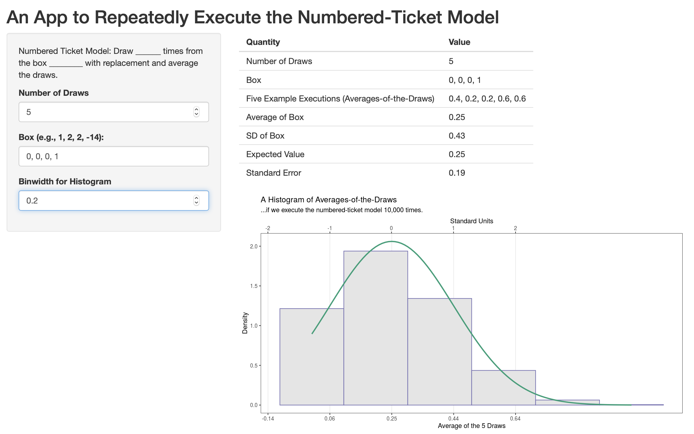

Chapter 2 The Numbered-Ticket Model
The numbered-ticket model (NTM) is a familiar model that we can use to understand other, unfamiliar chance processes. If we can figure out what particular NTM “is like” an unfamiliar process, then we can quickly (and almost completely) understand that unfamiliar process. The only hard part is to figure out what numbered-ticket model is like the unfamiliar process.
Here’s the key: We can use the NTM to understand (or “predict”) the likely values from a chance process (e.g., the average of the spots shown across 100 rolls of a die) without ever experimenting with either.
Creating the analogy, though, is not trivial.
2.1 The Generic Form
Here’s the generic form of the NTM:
Numbered-Ticket Model: Fill a box with \(k\) tickets numbered with \(t_1\), \(t_2\), \(t_3\), …, \(t_k\). Draw \(N\) times with replacement from the box. Record the average of the draws.
As you can see, to create a particular NTM, we need to choose:
- The number of tickets that go into the box.
- The numbers that are written on the tickets.
- The number of times to draw from the box.
Remember that we always draw with replacement and then average the draws.
And here are three particular NTMs with the details filled in:
- Fill a box with 6 tickets numbered with 1, 2, 3, 4, 5, 6. Draw 10 times with replacement from the box. Record the average of the draws.
- Fill a box with 6 tickets, five numbered with 0 and one numbered with 1. Draw 10 times with replacement from the box. Record the average of the draws.
- Fill a box with 2 tickets numbered with 0 and 1. Draw 100 times with replacement from the box. Record the average of the draws.
- Fill a box with 50 million tickets, 22 million numbered with 0 and 28 million numbered with 1. Draw 900 times with replacement from the box. Record the average of the draws.
Exercise 2.1 Write down three particular versions of the numbered-ticket model. Try to be creative. Push the boundaries of allowable numbers of tickets, numbers on the tickets, and numbers of draws.
Solution
Your solution will vary, but here’s an example:
A particular numbered-ticket model: Fill a box with 3 tickets numbered 4, -17, and 100. Draw 9 times with replacement from the box. Record the average of the draws.
- You can choose any finite, positive integer (1, 2, 3, …) for the number of tickets in the box.
- You can number a ticket with any finite, real number (e.g., 0, -1.1, 1222, /3, \(\pi\)).
- You can choose any finite, positive integer (1, 2, 3, …) for the number of draws.
Exercise 2.2 A box has 100 tickets: 40 tickets numbered with 0 and 60 tickets numbered with 1. You make 100 draws with replacement from the box.
First, does the average of the draws equal the proportion of the draws that are 1s? Why?
Second, which best describes the average of the draws?
- It will always equal exactly 0.6.
- It will usually equal exactly 0.6.
- It will not often equal exactly 0.6, but it will usually be close.
What if you made the draws without replacement?
Solution
Because of the indicator trick, the average of the draws equals the proportion of the draws that are 1s.
The best choice is: “It will not often equal exactly 0.6, but it will usually be close.” To be 100% sure, I repeated this exact process on my computer one million times. The average equaled exactly 0.6 in only 8% of those repetitions. For the average to equal 0.6, you need to draw exactly 60 1s. But 59 or 61 1s happens almost as often as 60. And 58 or 62 1s happens almost as often as 59 and 61. Indeed, you get 55 1s about 5% of the time (same for 65). As such, 0.6 is the most likely outcome, but you get that only about 8% of the time in the long run.
If you sampled without replacement, you would always get an average of exactly 0.6, because you sampled the entire box and the average of the box is 0.6.2.2 “Is Like”
The NTM is valuable because it’s very easy to summarize. If we can find an NTM that “is like” an unfamiliar chance process of interest, then we easily summarize that unfamiliar chance process.
Below are two key examples that show how it works.
2.2.1 Key Example 1
Rolling a die 10 times and averaging the dots shown across the 10 rolls is like drawing 10 times with replacement from a box with six tickets numbered with 1, 2, 3, 4, 5, 6 and averaging the draws.
Read that again and convince yourself that the two are equivalent.
On each roll of the die, we have a 1/6 probability of getting a 1, and a 1/6 probability of getting a 2, and so on. These probabilities are identical for the NTM.
Sampling with replacement from a box with tickets numbered 1, 2, 3, 4, 5, 6 is just like rolling a die.
Exercise 2.3 Get the following materials:
- A six-sided die. (If you don’t have one handy, here’s a virtual substitute.)
- A box of six tickets numbered 1, 2, 3, 4, 5, 6. An Ace, 2, 3, 4, 5, and 6 from a deck of cards works great.
Now do the following:
- Roll the die ten times. Record each roll, then compute the average.
- Draw 10 times with replacement (mixing well after replacement) from the box of tickets. Record each draw, then compute the average.
What are your results? You probably got a different average from each, but are these chance processes analogous? If I were going to pay you the average-of-the-rolls or the average-of-the-draws in dollars, would you care which of the two I used (before you saw the results)?
2.2.2 Key Example 2
Rolling a die 10 times and computing the proportion of sixes is like drawing 10 times with replacement from a box with six tickets numbered with 0, 0, 0, 0, 0, 1 and averaging the draws.
Read that again and convince yourself that the two are equivalent.
On each roll of the die, we have a 5/6 probability of getting a not-six and a 1/6 probability of getting a six. On each draw from the box, we have a 5/6 probability of drawing a 0 and a 1/6 probability of drawing a 1.
Because of the indicator trick, getting a six and counting is just like drawing a 1 and summing it. Similarly, getting a not-six and not counting it is just like drawing a zero and summing it.
Because of the indicator trick, sampling with replacement from a box with six tickets numbered with 0, 0, 0, 0, 0, 1 and summing the draws is just like rolling a die and counting the sixes. (Then we could convert the count/sum to a proportion/average by dividing by the number of rolls/draws.)
Here’s a guideline: When the chance process involves a proportion (e.g., the proportion of sixes), your box of tickets needs to have only 0s and 1s. It needs 1s for the things that count and 0s for the things that don’t.
I refer to a box of tickets that contains only 0s and 1s as a 0-1 box (read as “zero one box”).
Exercise 2.4 Get the following materials:
- A six-sided die. (If you don’t have one handy, here’s a virtual substitute.)
- A box of six tickets numbered 0, 0, 0, 0, 0, 1.
Now do the following:
- Roll the die 10 times. Record each roll, then compute the proportion of the rolls that are six.
- Draw 10 times with replacement (mixing well after replacement) from the box of tickets. Record each draw, then compute the average.
What are your results? Your proportion and average are probably not the same, but are these chance processes analogous? If I were going to pay you the proportion-of-sixes or the average-of-the-draws in dollars, would you care which of the two I used (before you saw the results)?
Exercise 2.5 You can play either of the following games of chance:
- Win $10 if you roll a six with a six-sided die.
- Draw once from a box of six tickets numbered with 0, 0, 0, 0, 0, 10 and win the amount on the ticket, in dollars.
Which would you choose? Or are they the same?
Solution
They are the same. With both options, you have a 1/6 chance of winning $10. The objects used aren’t relevant.Exercise 2.6 You can play either of the following games of chance:
- Draw once from a box of six tickets numbered with 0, 0, 0, 100, 100, 100. You win the amount shown on the ticket.
- Draw once from a box of two tickets numbered with 0 and 100. You win the amount shown on the ticket.
Which would you choose? Or are they the same?
Solution
They are the same. With both options, you have a 3/6 = 1/2 chance of winning $100. The first option has more tickets, but because we’re sampling with replacement, the two games are equivalent.Exercise 2.7 Choose an NTM that “is like” the following unfamiliar chance processes.
- Tossing a fair coin 100 times and computing the proportion of heads is just like drawing ______ times with replacement from a box with _____ tickets numbered with ________ and averaging the draws.
- Suppose you have a biased coin that comes up heads 60% of the time. Tossing this biased coin 100 times and computing the proportion of heads is just like drawing ______ times with replacement from a box with _____ tickets numbered with ________ and averaging the draws.
- Suppose you have a biased coin that comes up heads 50.1% of the time. Tossing this biased coin 100 times and computing the proportion of heads is just like drawing ______ times with replacement from a box with _____ tickets numbered with ________ and averaging the draws.
Solution
- 100; 2; 0, 1.
- 100; 10; 6 1s and 4 0s. (Alternatively, 100; 100; 60 1s and 40 0s. The key is to make 60% of the box 1s and the rest 0s.)
- 100; 1000; 501 1s and 499 0s. The key is to make 50.1% of the box 1s and the rest 0s.
Exercise 2.8 Suppose you have an urn with 6 red marbles, 3 blue marbles, and 1 yellow marble. Drawing 5 marbles with replacement and computing the proportion that are blue is like drawing ______ times with replacement from a box with _____ tickets numbered with ________ and averaging the draws.
Solution
5; 10; 3 1s and 7 0s
The key is to make 30% of the box 1s, just like 30% of the marbles in the urn are blue.2.3 Summarizing the NTM Process
As an example, suppose that we draw 10 times with replacement from a box of six tickets numbered with 1, 2, 3, 4, 5, 6 and average the draws (Key Example #1). This is analogous to rolling a die 10 times and averaging the spots on each roll.
Let’s think about how we can summarize (or “predict”) this chance process.
For an NTM, the average-of-the-draws is random, just like a coin toss. You don’t know exactly what you’ll get. Sure, if you toss a coin, it might come up heads. But we can describe the coin toss process as having a 0.5 probability of heads. Similarly, we can describe the NTM process.
It turns out that we can summarize the random average-of-the-draws from the NTM much like we summarize a list of numbers: The average-of-the-draws will be about __________ give or take __________ or so.
2.3.1 Letting a Computer Do Some Work
To better understand this chance process, let’s use a computer to execute the NTM above (draw 10 times with replacement from a box of six tickets numbered with 1, 2, 3, 4, 5, 6 and average the draws).
First, create a box with six tickets numbered 1, 2, 3, 4, 5, 6.
Now draw 10 times with replacement from that box (and print the draws).
[1] 6 3 2 4 2 5 3 2 6 3Finally, compute (and print) the average-of-the-draws.
[1] 3.6For our 10 draws, we get 6, 3, 2, 4, 2, 5, 3, 2, 6, 3. The average-of-the-draws is 3.6.
For giggles, I repeated the process and drew6, 6, 2, 1, 6, 6, 1, 4, 4, 2, so the second average-of-the-draws is 3.8—slightly different from the first.
You see, each time we run the NTM, we get a slightly different average-of-the-draws.
This raises an important question:
If we ran the NTM again, and again, and again—a huge number of times—what would the average-of-the-draws look like?**
I’d like to repeat it an infinite number of times, but that’s impossible. So let’s say that “huge number of times” is 10,000 (and assume that 10,000 is reasonably close to infinite). Let’s repeat this process 9,998 more times.
I’m not showing the code, and I’m not printing all 10,000 repetitions, but here’s an abbreviated table.
| Repetion | Draws | Average-of-the-Draws |
|---|---|---|
| #1 | 6, 3, 2, 4, 2, 5, 3, 2, 6, 3 | 3.6 |
| #2 | 6, 6, 2, 1, 6, 6, 1, 4, 4, 2 | 3.8 |
| #3 | 4, 3, 1, 6, 5, 4, 2, 6, 2, 4 | 3.7 |
| #4 | 3, 4, 1, 1, 4, 3, 6, 1, 5, 3 | 3.1 |
| #5 | 1, 1, 5, 2, 2, 3, 3, 5, 3, 1 | 2.6 |
| #6 | 2, 3, 1, 3, 4, 2, 4, 3, 5, 6 | 3.3 |
| #7 | 3, 2, 2, 5, 6, 4, 4, 2, 5, 4 | 3.7 |
| #8 | 3, 5, 3, 4, 1, 3, 1, 3, 2, 2 | 2.7 |
| #9 | 2, 4, 4, 2, 4, 5, 1, 2, 2, 1 | 2.7 |
| #10 | 4, 1, 6, 1, 3, 2, 5, 2, 6, 1 | 3.1 |
| … | … | … |
| #9999 | 2, 4, 4, 2, 4, 3, 6, 4, 3, 6 | 3.8 |
| #10000 | 2, 3, 5, 1, 1, 4, 4, 4, 4, 6 | 3.4 |
Now look closely at the “Average-of-the-Draws” column in the table above.
Imagine that we took the average of that column and SD of that column. We might think of those as the “long-run” average and SD of the average-of-the-draws.
When I compute the average of our 10,000 averages-of-the-draws, I get 3.4932. When I compute the SD, I get 0.5400138. Those not exactly the long-run average and SD, because our “long run” is only 10,000 draws, but they should be very close.
We can use these numbers to summarize the NTM with the following: The average-of-the-draws will be about __________ give or take __________ or so.
We refer to the first blank as the expected value and the second blank as the standard error (SE).
2.4 Expected Value and Standard Error
The expected value is much like an average, except the expected value summarizes a chance process and the average summarizes an observed list of numbers.
The SE is much like an SD, except the SE summarizes a chance process and the SD summarizes an observed list of numbers.
The table below summarizes the relationship.
| Quantity | Observed List of Numbers | Chance Process |
|---|---|---|
| typical value | average | expected value |
| give-or-take | SD | SD |
Much like causation requires us to imagine a hypothetical, counterfactual world, the expected value and SE require us to imagine repeating the NTM an infinite number of times. EAch repetition gives us one average-of-the-draws, so infinite repetitions gives us an imaginary, infinitely-long list of averages-of-the-draws. The the imaginary average of this imaginary, infinitely-long list gives us the expected value. The SD of this imaginary, infinitely-long list gives us the SD.
While understanding the expected value and SE requires a lot of imagination, computing the expected value and SE only requires straightforward formulas.
- For a numbered-ticket model, the expected value is the long-run average of the average-of-the-draws and equals the average of tickets in the box.
- For a numbered-ticket model, the SE is the long-run SD of the average-of-the-draws and equals \(\dfrac{\text{SD of the tickets in the box}}{\sqrt{\text{number of draws}}}\).
We know how to compute averages and SDs, so it’s really easy to compute the expected value and SE.
[1] 3.5[1] 0.5400617Exercise 2.9 Compute the expected value and SE for the average-of-the-draws for an NTM that uses the following boxes of tickets and numbers of draws.
- [1, 2, 3, 4, 5, 6]; 100 draws
- [1, 1, 1, 4, 5, 6]; 9 draws
- [-17, 4, 3, 6]; 400 draws (Hint: The SD of this box is 9.30.)
- [100, -14, 17, 3]; 16 draws (Hint: The SD of this box is 43.83.)
For each NTM, fill in the blanks: The average-of-the-draws will be about __________ give or take __________ or so.
Solution
- 3.5; 0.17
- 3; 0.69
- -1; 0.47
- 26.510.96
The expected value belongs the first blank; the SE belongs in the second.
Exercise 2.10 Draw _______ times with replacement from a box with six tickets numbered with 1, 2, 3, 4, 5, 6 and averaging the draws. Find the SE for the average-of-the-draws for the following number of draws:
- 1
- 9
- 10
- 400
- 900
- 2500
Keep two digits in addition to the leading zeros.
Do you notice any pattern? Was this pattern predictable by simply inspecting the formula for the SE?
Solution
- 1.71
- 0.57
- 0.54
- 0.085
- 0.034
2.4.1 Tricks for 0-1 Boxes
If your box of tickets has only 0s and 1s, then I refer to it as a “0-1 box” (read as “zero one box”).
For a 0-1 box, we have a couple of rules for quickly computing the average and SD of the tickets in the box.:
- The average of the tickets in the box equals the proportion of the tickets numbered with 1. (This is just the indicator trick.)
- The SD of the tickets in the box equals \(\sqrt{(\text{avg. of the tickets in the box}) \times (1 - \text{avg. of the tickets in the box})}\). This is an incredibly helpful trick. As you know, computing the SD is tedious. But if you’re working with a 0-1 box, computing the SD of the box is easy.
Exercise 2.11 Compute the expected value, the SD of the box, and the SE for an NTM that uses the following boxes of tickets and numbers of draws. Notice that each box is a 0-1 box, so use the appropriate tricks.
- [0, 1]; 9 draws
- [0, 0, 1]; 400 draws
- [0, 1, 1]; 16 draws
- [0, 0, 0, 0, 0, 1]; 900 draws
- a box with 400 0s and 200 1s; 100 draws
- a box with 120 million 0s and 180 million 1s; 900 draws
For each NTM, fill in the blanks: The average-of-the-draws will be about __________ give or take __________ or so.
Solution
- EV = 1/2 = 0.50; SD of the box = sqrt[0.5 x (1 - 0.5)] = 0.5; SE = 0.5/sqrt(9) = 0.17
- EV = 1/3 = 0.33; SD of the box = sqrt[0.33 x (1 - 0.33)] = 0.47; SE = 0.47/sqrt(400) = 0.024
- EV = 2/3 = 0.67; SD of the box = sqrt[0.67 x (1 - 0.67)] = 0.47; SE = 0.47/sqrt(16) = 0.12
- EV = 1/6 = 0.17; ; SD of the box = sqrt[0.17 x (1 - 0.17)] = 0.38; SE = 0.38/sqrt(900) = 0.013
- EV = 200/600 = 1/3 = 0.33; SD of the box = sqrt[0.33 x (1 - 0.33)] = 0.47; SE = 0.47/sqrt(100) = 0.047
- EV = (180 million)/(300 million) = 180/300 = 3/5 = 0.60; SD of the box = sqrt[0.6 x (1 - 0.6)] = 0.49; SE = 0.49/sqrt(900) = 0.016
Exercise 2.12 Define the expected value and SE. Choose a particular NTM (i.e., choose the number of tickets, the numbers on each ticket, and the number of draws) and use it as an example. What exactly does “long-run average of the average-of-the-draws” mean? What exactly does “long-run SD of the average-of-the-draws” mean?
Compute the expected value of the average-of-the-draws for your NTM. Compute the SE of the average-of-the-draws for your NTM.
Solution
For a numbered-ticket model, the expected value is the long-run average of the average-of-the-draws.
The SE is the long-run average of the average-of-the-draws.
An example helps illustrate what I mean by “long-run” average and SD. I’m going to use an NTM with and 5 draws and 3 tickets numbered 1, 2, and 3. To conceive of the expected value and SE, we need to imagine repeating this NTM a large number of times. Each repetition produces one average-of-the-(5)-draws. Suppose we repeated it one million times. Then we would have one million averages-of-the-(5)-draws. If we took the average of these one million averages-of-the-(5)-draws, then that’s a reasonable approximation to the expected value or “long-run average of the average-of-the-draws.” If we took the SD, then that’s a reasonable approximation to the SE or “long-run SD of the average-of-the-draws.”
In short, to conceive of the expected value and SE, we need to imagine a hypothetical, infinitely long list of averages-of-the-draws that we would obtain by repeating the NTM over-and-over-and-over. The expected value is the average of this hypothetical, infinitely-long list. The SE is the SD of this same list.
The expected value is always equal to the average of the tickets in the box. My box has tickets numbered 1, 2, and 3, so the expected value is 2.
The SE is always equal to the SD of the box divided by the square root of the number of draws. In my example, that’s 0.37.Exercise 2.13 Use the NTM app to explore your own NTM. Vary the number of draws. Vary the tickets in the box. Be creative. Confirm that the app correctly computes the expected value and the SE.
Notice that the app does two things. First, it computes the exact expected value and the SE. Second, it shows you the average-of-the-draws for five repetitions and the histogram of the average of the draws for 10,000 repetitions.
Exercise 2.14 Suppose that of the roughly 300 million adults living in the US, 120 million approve of the job Donald Trump is doing as president, 180 disapprove, and 20 aren’t sure. Suppose I sample 400 at random. What’s expected value and SE of the proportion of people that approve.
Fill in the blanks: The proportion that approve will be about __________ give or take __________ or so.
Hint
To find the expected value and SE for this proportion, you need to move from an unfamiliar context (sample survey) to a familiar context (numbered-ticket model).
This sample survey is just like drawing 400 times from a box of numbered tickets with 120 million 1s and 180 million 0s.Solution
After setting up an analogous NTM, you can easily see that the expected value of the proportion of the sample that approves is (120 million)/(300 million) = 0.4.
To compute the SE, we first need the SD of the box. SD of the box = sqrt[0.4 x (1 - 0.4)] = 0.49.
The SE = (SD of box)/sqrt(number of draws) = 0.49/sqrt(400) = 0.024.
The proportion of people that approve will be about 0.4 give or take 0.024 or so.2.5 The Long-Run Histogram
We already know that the average-of-the-draws in the NTM is the [expected value] give or take the [SE]. This is a fairly complete summary of the process. Indeed, it’s almost magical.
But we can describe the process even more completely. It turns out that, as long as the number of draws is large enough, the average-of-the draws follows the normal curve.
What?! Let me say that again. No matter what tickets you put in the box, the average-of-the-draws follows the normal curve (as long as the number of draws is large enough).
Again, imagine that we repeat the NTM over-and-over-and-over, say 10,000 times. If you take the 10,000 averages-of-the-draws and create a histogram, then that histogram follows the normal curve.
This is an amazing, magical result.
Exercise 2.15 We’re not going to prove this result (called the “central limit theorem”) mathematically. But you can explore a variety of NTMs to confirm that it works.
Use the NTM app to explore several NTMs. Try the following boxes. Start with 10 draws and increase the number of draws until the 10,000 averages-of-the-draws seems roughly normal. (The app can be a little slow when the number of draws gets bigger than about 50, so be patient–it’s repeating the process 10,000 times.)
- 1, 2, 3, 4, 5, 6
- 0, 1
- 0, 0, 0, 0, 0, 1
- 1, 1, 2, 3, 4, 5, 6000
For a large-enough number of draws, does the average-of-the-draws roughly form a normal curve for each box?
Solution
- 10 draws is definitely large enough
- 10 draws is definitely large enough
- about 30 draws is large enough
- With 10 draws, you get a definitely-not-normal distribution. Each “hump” is created by drawing different numbers of 60s. The left-most hump is no 60s. The second includes all the sets of draws with 1 60. And so on. With 100 draws, the humps are less prominent, but still present. With 400 draws, the average-of-the-draws follows a normal distribution.
Because the average-of-the-draws follows the normal curve, we can say the following (assuming the number of draws is large enough):
- There is a 68% chance (or 0.68 probability) that the average-of-the-draws falls within 1 SE of the expected value.
- There is a 95% chance (or a 0.95 probability) that the average-of-the-draws falls within 2 SEs of the expected value.
We can also use the normal approximation to compute the probability that the average-of-the-draws falls into a particular interval. If the number of draws is large, this approximation is extremely precise (much more precise than for most lists of numbers).
To do this, remember the steps for a normal approximation, but use the expected value in place of the average and the SE in place of the SD:
- Draw a picture. This is important. If you can draw the correct picture, it’s really easy to find the correct normal approximation.
- Draw the normal curve.
- Label the points of interest. I find it helpful to label the expected value as well.
- Shade the area of interest.
- Convert the points of interest to standard units or z-scores. I like to add the z-scores in parentheses underneath the points of interest. Remember that \(\text{std. unit} = z\text{-score} = \frac{\text{value } - \text{ expected value}}{\text{SE}}\).
- Use the Rules of the Normal Curve.
- The normal table gives the area between \(z\) and its opposite \(-z\). See Appendix A of this monograph. Usually, start here.
- The area under the entire curve is 100%.
- The curve is symmetric so that the area above a particular value \(z\) equals the area below its opposite \(-z\).
Example
Suppose we draw 9 times with replacement from a box with two tickets numbered with 0 and 1 and average the draws.
(Because this is a 0-1 box, remember to use the tricks to compute the average and SD of the box.)
\(\text{expected value} = \text{average of the box} = \frac{1}{2} = 0.50\)
\(SE = \dfrac{\text{SD of box}}{\sqrt{\text{number of draws}}} = \dfrac{\sqrt{0.50 \times (1 - 0.50)}}{\sqrt{9}} = \dfrac{0.5}{3} = \dfrac{1}{6} = 0.17\)
The average-of-the-draws will fall between 0.33 and 0.67 with probability 0.68 (or 68% of the time). It will fall between 0.16 and 0.84 with o probability of 0.95 (or 95% of the time).
We can also compute the probability of getting and average-of-the-draws greater than 0.7.
Here’s my work:
- The expected value is 0.5 and the SE is 0.17.
- The quantity of interest 0.7 is (0.7 - 0.5)/0.17 = 1.18 SEs above the average. That’s the z-score.
- If we look up z = 1.18 in the normal table (see Appendix A of this monograph), we see that it isn’t there. Instead, use the closest, which is 1.2. We see that 77% falls between -1.20 and 1.20.
- If 77% falls “in the middle,” then 23% falls in the two tails.
- If 23% falls in the two tails, then 11.5% or 12% falls in each tail.
- Therefore, the probability of obtaining an average-of-the-draws greater than 0.7 is 0.12. Or we might say “the average-of-the-draws will be larger than 0.7 12% of the time.”

Exercise 2.16 Suppose an NTM where we’re drawing 100 times from a box with two tickets, one numbered with 0 and the other numbed with 1. There’s a 95% chance that the average-of the draws is between ____ and ____.
Solution
The expected value is 0.5, the SD of the tickets in the box is 0.5, and the SE is 0.05. Remember that the average-of-the-draws follows the normal curve, the average-of-the-draws falls with in 2 SEs of the expected value 95% of the time. So we just hop 2 SEs below the expected value to find the lower-end of the range. We hop 2 SEs above the expected value to find the higher-end of the range.
In this case, the interval is [0.5 - (2 x 0.05), 0.5 + (2 x 0.05)] = [0.4, 0.6].
There’s a 95% chance that the average of the draws is between 0.4 and 0.6.Exercise 2.17 Suppose and urn filled with 5 red marbles, 4 green marbles, and 1 yellow marble. Draw 100 marbles with replacement and compute the proportion that are red. There’s a 95% chance that the proportion is between ____ and ____.
Solution
This is just like the Exercise 2.16, because the NTM above “is like” this unfamiliar chance process.Exercise 2.18 Suppose and urn filled with 5 red marbles, 4 green marbles, and 1 yellow marble. Draw 100 marbles with replacement and compute the proportion that are red. There’s a ____% chance that the proportion is above 0.58.
Solution
We can build on our work from Exercise 2.16, because the NTM described in that question “is like” this unfamiliar chance process of drawing marbles from an urn.
expected value of the proportion of draws that are red = 0.5 SE of the proportion of draws that are red = 0.05
Now following the normal approximation, we would draw a picture, convert to standard units and then use the rules.
- The expected value is 0.5 and the SE is 0.05.
- The quantity of interest 0.58 is (0.58 - 0.5)/0.0 = 1.6 SEs above the average. That’s the z-score.
- If we look up z = 1.6 in the normal table (see Appendix A of this monograph), we see that 89% falls between -1.6 and 1.6 (i.e., “in the middle”).
- If 89% falls “in the middle,” then 11% falls in the two tails.
- If 11% falls in the two tails, then 6.5% or 7% falls in each tail.
- Therefore, the probability of obtaining a proportion-that-are-red greater than 0.58 is 0.07. Or we might say “the proportion of the draws that are red will be larger than 0.58 7% of the time.”
Exercise 2.19 Suppose and urn filled with 8 red marbles, 1 green marble, and 1 yellow marble. Draw 100 marbles with replacement and compute the proportion that are red. There’s a ____% chance that the proportion is less than 0.78.
Solution
Using the analogous NTM, we can see that:
- expected value of the proportion of draws that are red = 0.8
- the SD of the tickets in the box is sqrt(0.8*0.2) = 0.4
- SE of the proportion of draws that are red = 0.4/sqrt(100) = 0.4/10 = 0.04.
Now following the normal approximation, we would draw a picture, convert to standard units and then use the rules.
- The expected value is 0.8 and the SE is 0.04.
- The quantity of interest 0.78 is (0.78 - 0.80)/0.04 = 0.5 SEs below the average. That’s the z-score.
- If we look up z = 0.5 in the normal table (see Appendix A of this monograph), we see that 38% falls between -0.5 and 0.5 (i.e., “in the middle”).
- If 38% falls “in the middle,” then 62% falls in the two tails.
- If 62% falls in the two tails, then 31% falls in each tail.
- Therefore, the probability of obtaining a proportion-that-are-red less than 0.78 is 0.31. Or we might say “the proportion of the draws that are red will be lless than 0.78 31% of the time.”
Exercise 2.20 Suppose I draw five cards from a deck with replacement and compute the proportion that are hearts. There’s a 95% chance that the proportion will be between _____ and ____.
Solution
We need to be careful, because the average-of-the-draws follows the normal curve only if the number of draws is “large enough.”
We need to use an NTM with 5 draws and a box with 3 0s and a single 1.
- expected value = 0.25
- SD of the box = sqrt(.25*.75) = 0.43
- SE = 0.43/sqrt(5) = 0.19
We’re familiar enough with the normal table to know that 95% of the normal curve is between -2 and 2, so we just hop two SEs to the left and two SEs to the right. That’s 0.25 - 20.19 and 0.25 + 20.19, or -0.13 and 0.63. Something seems to have gone wrong, because the proportion of hearts cannot be negative.
This is not as big a problem as it seems, but it stems partly from the fact that we need the number of draws to be “large enough.” Five draws might not be large enough. To better understand, I plugged this NTM into the app, and got the results below.
 but this isn’t as bad as it initially seems. On my computer, I simulatied this NTM 10,000 times and the average-of-the-draws fell between -0.13 and 0.63 98% of the time. That’s not too far off 95%, especially since we would usually consider 5 a “large” number of draws.
2.6 Summary
- The numbered-ticket model is a particularly useful chance process to understand well, because we can choose the number of tickets, the numbers on those tickets, and the number of draws to make it “like” many other chance processes.
- When using the familiar numbered-ticket model to understand an unfamiliar chance process, ask: How many tickets go in the box? What number goes on each ticket? How many draws should I take?
- The expected value is the long-run average of the average-of-the-draws. It’s exactly equal to the average of the tickets in the box.
- The standard error (SE) is the long-run SD of the average-of-the-draws. It’s exactly equal to \((\text{SD of the tickets in the box})/\sqrt{({\text{number of draws}})}\).
- The expected value and SE are a lot like the average and SD. The difference is key: the expected value and SE describe a chance process, while the average and SD describe observed lists of numbers.
- When using the numbered-ticket model to understand an unfamiliar chance process involving a proportion, remember to fill your box with 0s and 1s (i.e., use the indicator trick).
- When working with a 0-1 box (i.e., a box with only 0s and 1s), it’s helpful to remember two tricks: (1) the average of the tickets in the box equals the proportion of tickets that are 1s and (2) the SD of the tickets in the box equals \(\sqrt{(\text{avg. of tickets in the box}) \times (1 - \text{avg. of the tickets in the box})}\).
- If you have a large number of draws, then the long-run histogram of the average-of-the-draws follows the normal curve. Use this long-run histogram to compute the probability that the average-of-the-draws will fall into particular ranges (e.g., more than 2, between 1 and 2, less than -1, etc.).
After reading this chapter and doing these exercises, you should be able to…
- Describe the concepts of expected value and SE in a simplified manner.
- Connect a numbered-ticket model to an unfamiliar chance process and describe the (random) outcomes of that chance process as follows.
- The [outcome of the chance process] will be about __________ give or take __________ or so.
- About 68% (or 95%) of the time, the [outcome of the chance process] will be between _________ and _________.
- The [outcome of the chance process] will fall above/below/between ___________ about ____ percent of the time.
2.7 Additional Exercises
Exercise 2.21 250 million adults are living in the US. 100 million “approve” of the job Donald Trump is doing as president, 140 million “disapprove,” and 10 million “aren’t sure.” Suppose I sample 400 of these adults and compute the proportion of people that approve.
Choose an NTM that “is like” this chance process and use it to answer the questions below.
Because the SE is so small for this problem, round to three decimal places.
- The proportion that approve will be about __________ give or take __________ or so.
- About 68% of the time, the proportion that approve will be between _________ and _________.
- About 95% of the time, the proportion that approve will be between _________ and _________.
- The proportion that approve will fall above 0.42 _________ percent of the time.
- The proportion that approve will fall below 0.39 _________ percent of the time.
- The proportion that approve will fall between 0.39 and 0.42 _________ percent of the time.
Solution
The expected value is 0.4, the SD of the numbers in the box is \(\sqrt{0.4 \times 0.6} = 0.49\), and the SE is \(\frac{0.49}{\sqrt{400}} = \frac{0.49}{20} = 0.025\).
- The proportion of people that approve will be about 0.4 give or take 0.025 or so. About 68% of the time, the proportion of people that approve will be between 0.375 and 0.425.
- About 95% of the time, the proportion of people that approve will be between 0.35 and 0.45.
- The proportion of people that approve will fall above 0.42 21% percent of the time.
- The proportion of people that approve will fall below 0.39 35% percent of the time.
- The proportion that approve will fall between 0.39 and 0.42 (100% - 21% - 35%) = 44% percent of the time. (Just using the previous two questions.)
Exercise 2.22 In your own words, explain the numbered-ticket model in a way that someone who hasn’t taken the class could understand. What can change across different versions? What stays the same? (Compare this answer to what you wrote at the beginning of the last chapter.)
Exercise 2.23 Suppose you have an urn with 6,000 red marbles, 3,000 blue marbles, and 1,000 yellow marbles. Drawing 100 marbles with replacement and computing the proportion of draws that are blue is like drawing ______ times with replacement from a box with _____ tickets numbered with ________ and averaging the draws.
But suppose I sampled 100 times without replacement from the urn. Could I use the same NTM to analyze the draws from the urn? Or does the assumption of sampling with replacement completely invalidate the analogy?
Solution
100; 10; 3 1s and 7 0s
The key is to make 30% of the box 1s, just like 30% of the marbles in the urn are blue.
Sampling with and without replacement are a lot alike, so long as the number of draws are small relative to the number of marbles in the urn. In this case, 100 draws is a lot smaller than 10,000 marbles, so we can use the NTM that assumes drawing with replacement to analyze a change process that assumes drawing without replacement.